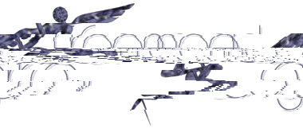

|  | |||||
|
|||||
|
|||||
|
Willkommen
auf der Homepage des Freemed Projekt's! Falls Sie an diesem Projekt teilnehmen
möchten senden Sie bitte ein EMail an Jeff,
den Projektleiter.
Freemed Project highlights (site updates)
Support & Bug Tracking system
If you have any bug reports
to make please do so here
Why Freemed? Freemed is designed to be not only an office management system designed to run on Linux but also an information system. With this system it is hoped that physicians and providers will be able to collect both demographic and outcome data. Why Freemed now? Freemed has been a long time in the thought process and only recently have machines and code systems been available at practical prices to make this a reality. Why do the WHOLE thing? Freemed is an integrated system which will run on ANY browser. This enables providers to access their systems remotely without expensive equipment or dedicated lines. To do this meant 'rewiring' an entire medical management system. Freemed is being built from the ground up as a browser enabled system. It's by nature Y2k compliant. What about security? Security is ensured though password encryption. The level and amount of security can be set at each office. Because of the security already built into Linux, making the browser secure added one more layer of security. Because this is Linux, there are no viruses to worry about which might destroy a system. What about languages? At the moment Freemed will be available in German, French, Spanish, Italian and Chinese as well as English. Other language support will be added as we find people willing to do the translations. There are still some bugs in the currency end of things but hopefully those will be worked out before Alpha1. What needs do we have NOW? Freemed needs help in the following areas as of 15 - September - 1999.
Join our community's mailing list with an e-mail response or through web registration.
Visitors
to date: |
|
|
Contact
Jeff at: jeff@univrel.pr.uconn.edu
|
||||||
|
|
||||||